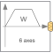

PathPlanning6Generate reference angles for fastest kinematic movement |

|
Diagram
{kind=link}
Information
This information is part of the Modelica Standard Library maintained by the Modelica Association.
Given
- start and end angles of every axis
- maximum speed of every axis
- maximum acceleration of every axis
this component computes the fastest movement under the given constraints. This means, that:
- Every axis accelerates with the maximum acceleration until the maximum speed is reached.
- Drives with the maximum speed as long as possible.
- Decelerates with the negative of the maximum acceleration until rest.
The acceleration, constant velocity and deceleration phase are determined in such a way that the movement starts form the start angles and ends at the end angles. The output of this block are the computed angles, angular velocities and angular acceleration and this information is stored as reference motion on the controlBus of the r3 robot.
Parameters (9)
| naxis |
Value: 6 Type: Integer Description: Number of driven axis |
|---|---|
| angleBegDeg |
Value: zeros(naxis) Type: Real[naxis] (°) Description: Start angles |
| angleEndDeg |
Value: ones(naxis) Type: Real[naxis] (°) Description: End angles |
| speedMax |
Value: fill(3, naxis) Type: AngularVelocity[naxis] (rad/s) Description: Maximum axis speed |
| accMax |
Value: fill(2.5, naxis) Type: AngularAcceleration[naxis] (rad/s²) Description: Maximum axis acceleration |
| startTime |
Value: 0 Type: Time (s) Description: Start time of movement |
| swingTime |
Value: 0.5 Type: Time (s) Description: Additional time after reference motion is in rest before simulation is stopped |
| angleBeg |
Value: Cv.from_deg(angleBegDeg) Type: Angle[:] (rad) Description: Start angles |
| angleEnd |
Value: Cv.from_deg(angleEndDeg) Type: Angle[:] (rad) Description: End angles |
Connectors (1)
| controlBus |
Type: ControlBus |
|---|
Components (8)
| path |
Type: KinematicPTP2 |
|
|---|---|---|
| pathToAxis1 |
Type: PathToAxisControlBus |
|
| pathToAxis2 |
Type: PathToAxisControlBus |
|
| pathToAxis3 |
Type: PathToAxisControlBus |
|
| pathToAxis4 |
Type: PathToAxisControlBus |
|
| pathToAxis5 |
Type: PathToAxisControlBus |
|
| pathToAxis6 |
Type: PathToAxisControlBus |
|
| terminateSimulation |
Type: TerminateSimulation |
Used in Examples (1)
|
Modelica.Mechanics.MultiBody.Examples.Systems.RobotR3
Six degree of freedom robot with path planning, controllers, motors, brakes, gears and mechanics |